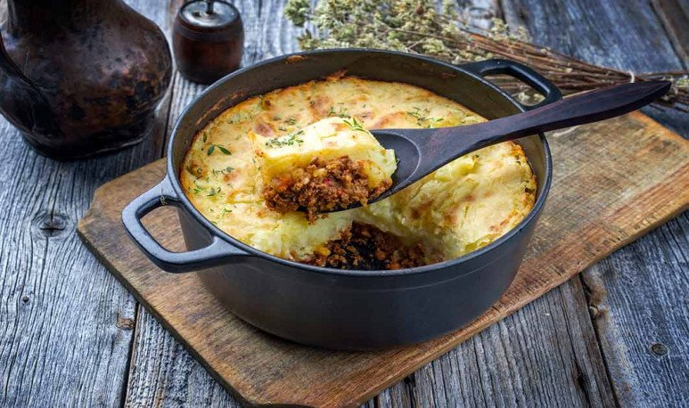

Pastel de Papas

El pastel de papa es un plato que consiste en una capa de papas sobre una capa de carne picada sazonada, con o sin base de papa debajo. Está basado en el plato de origen británico cottage pie, cuya traducción literal es 'pastel del rancho'
Ingredientes
- Papas,1 kilo
- Carne picada, 750gr
- Cebolla, 500grs
- Huevos duros, 2
- Pasas de uva sin semillas, 3/4 de taza
- Morron en concasé, 1
- Puré de tomates, 1/2 taza
- Harina, 1 cda sopera
- Sal y pimienta,a gusto
- Nuez moscada,a gusto
- Comino, a gusto
- Pimentón dulce, 1 cda sopera
- Queso rallado, 1 taza
- Leche o crema, c/n
- Huevos, 2
- Manteca,100 grs
- Azúcar, 1cda
Preparación
- Hervir la papa con una cucharada de sal gruesa y, cuando está cocida, escurrirla y pisarla con 100 gramos de manteca.
- Agregar sal, pimienta,nuez moscada y la media taza de queso rallado.
- Revolver y agregar un huevo.Si está demasiado duro, añadir un poco de leche o crema.
- Rehogar la cebolla en una sartén enmantecada sin moverla y con un poco de sal, para que sude.Incorporar el morron en concasé y la carne picada, y dejar cocinar unos 10 minutos.
- Ahí sumar la cucharada de harina,los condimentos, las aceitunas y el puré de tomates.Revolver bien y corregir el condimento.
- Colocar toda esta preparación en una fuente para horno y cubrir con el puré.
- Batir el huevo que quedó y pintar la superficie.
- Espolvorear con el azúcar o reemplazar por trocitos de manteca.
Volver al inicio